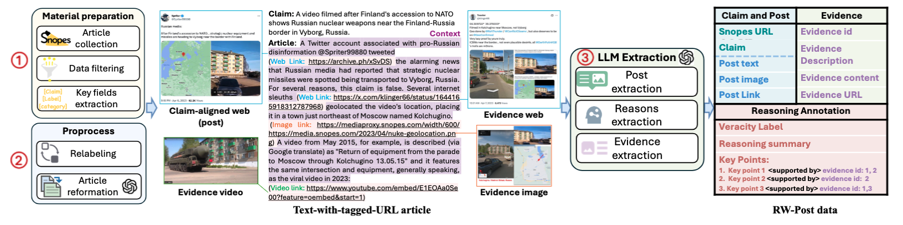

RW-Post: Auditable Evidence-Grounded Multimodal Fact-Checking in the Wild
We present RW-Post, a real-world multimodal fact-checking benchmark that connects social media posts with auditable reasoning traces and evidence grounded in human fact-check articles. Using AgentFact, we evaluate modern LVLMs and show that faithful evidence grounding remains a major challenge.